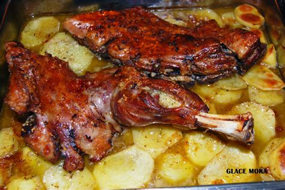
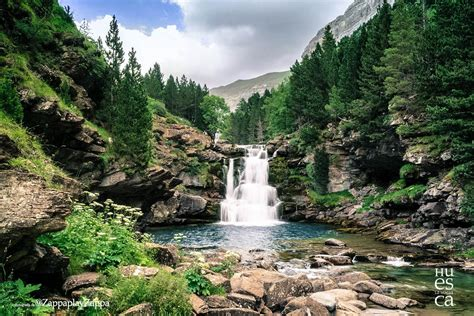
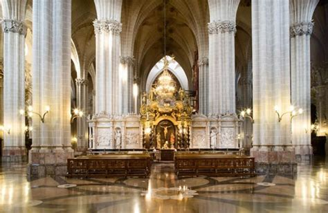
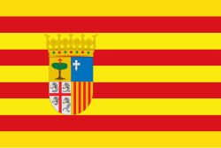
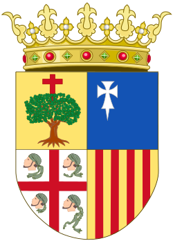

Aragon
Overview
Aragon is a historic region in northeastern Spain known for its medieval castles, stunning natural parks, and a rich blend of Christian and Moorish architecture. It includes parts of the Pyrenees and the Ebro River Valley. Zaragoza, its capital, is famous for the Basilica of Our Lady of the Pillar and a lively cultural scene.
Quick Facts
- Capital: Zaragoza
- Regional Language: Spanish
- Population: ~1.3 million
- Famous For: Mudéjar architecture, medieval history, mountain landscapes
- Fun Fact: Aragon was once a powerful kingdom that included parts of modern-day Italy and Greece!
Popular Dishes
Migas

Ternasco de Aragón

Bacalao al Ajoarriero
Frutas de Aragón
Famous Landmarks
Basilica of Our Lady of the Pillar

Aljafería Palace

Ordesa y Monte Perdido National Park

Loarre Castle

Teruel Mudéjar Architecture

Best Time to Visit
The best time to visit Aragon is in spring (April–June) and early autumn (September–October), when the weather is ideal for exploring both cities and natural landscapes.
Regional Symbols
- Flag: 
- Coat of arms: 